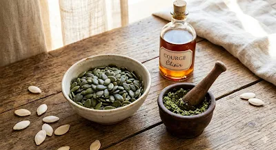
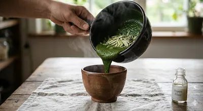

Élixirs naturels · 7 min de lecture
L'Élixir aux Graines de Courge : L'Alchimie de la Force et de l'Équilibre Retrouvé
Introduction
Imaginez un trésor vert émeraude, caché au cœur des cucurbitacées, si riche en énergie vitale qu'il était déjà vénéré par les civilisations précolombiennes pour ses vertus protectrices. La graine de courge (Cucurbita pepo) n'est pas qu'un simple amuse-bouche de l'automne. C'est un condensé de minéraux rares et de phytostérols, un véritable élixir solide capable de restaurer des fonctions essentielles de notre organisme souvent négligées par la vie moderne.
Dans cet article, nous allons explorer la puissance de la graine de courge, non pas comme un simple ingrédient de cuisine, mais comme un remède alchimique indispensable. Nous découvrirons comment ce petit noyau de vie peut transformer votre santé hormonale, renforcer votre immunité et apaiser votre mental.
Problème
Notre mode de vie sédentaire et notre alimentation déminéralisée créent des déséquilibres profonds :
Troubles urinaires et prostatiques : Chez l'homme, le vieillissement s'accompagne souvent d'un inconfort lié à la prostate. Chez la femme, les fuites urinaires ou les infections récurrentes empoisonnent le quotidien.
Carences en Zinc et Magnésium : Ces deux minéraux sont les piliers de notre immunité et de notre gestion du stress. Sans eux, nous sommes fatigués, irritables et fragiles face aux virus.
Déséquilibres hormonaux : Fatigue surrénalienne, chute de cheveux précoce et troubles de la libido sont souvent les signes d'un corps qui manque d'acides gras essentiels et de stérols végétaux.
Parasitage intestinal : Sans même le savoir, notre système digestif peut être le siège de parasites qui volent notre énergie et perturbent notre absorption nutritionnelle.
Promesse
L'élixir aux graines de courge offre une réponse naturelle et puissante. Ce n'est pas un traitement de surface, mais une nourriture profonde pour vos glandes et votre système immunitaire. Il promet de :
Soutenir et protéger la sphère urinaire et prostatique, redonnant confort et sérénité.
Recharger vos réserves de Zinc, l'oligo-élément de la peau, de la fertilité et de l'immunité.
Apaiser le système nerveux grâce à une biodisponibilité exceptionnelle en Magnésium.
Purifier votre environnement intérieur en agissant comme un vermifuge naturel doux mais efficace.
Bénéfice
En intégrant ce rituel dans votre vie, les changements sont tangibles :
Un confort nocturne retrouvé : Moins de réveils pour des besoins pressants, un sommeil plus continu.
Une vitalité masculine et féminine accrue : Une régulation hormonale qui se ressent sur l'énergie globale et la libido.
Une chevelure et une peau renforcées : Le zinc et les acides gras redonnent de l'éclat et freinent la chute des cheveux.
Une sérénité mentale : Moins de spasmes liés au stress, une meilleure résilience émotionnelle.
Pourquoi ce remède est efficace
L'efficacité de la graine de courge ne relève pas du hasard, mais d'une synergie biochimique rare. Elle est l'une des sources végétales les plus concentrées en Zinc et en Magnésium, deux piliers de la vie cellulaire. Mais son véritable secret réside dans ses Phytostérols (notamment le delta-7-stérol).
Action sur la Prostate et la Vessie : Les phytostérols agissent en inhibant l'enzyme 5-alpha-réductase, responsable de la conversion de la testostérone en dihydrotestostérone (DHT), facteur principal de l'hypertrophie de la prostate. Chez la femme, ils renforcent le plancher pelvien et les muscles de la vessie.
La Cucurbitine : Cet acide aminé unique possède des propriétés anthelminthiques (vermipuge). Elle paralyse les parasites intestinaux sans irriter la muqueuse de l'hôte, permettant une évacuation naturelle.
Le Tryptophane : Précurseur de la sérotonine (hormone du bonheur) et de la mélatonine (hormone du sommeil), il fait de cet élixir un relaxant nerveux puissant.
Acides gras insaturés : Riches en Oméga-6 et Oméga-9, ils nourrissent les membranes cellulaires et protègent le système cardiovasculaire en équilibrant le cholestérol.

Les bienfaits
Reprenons les piliers de cette alchimie verte :
Santé Masculine : Prévention et soulagement de l'hypertrophie bénigne de la prostate. Amélioration du confort urinaire et soutien de la fertilité grâce au Zinc.
Santé Féminine : Soulagement des symptômes de la ménopause (bouffées de chaleur, douleurs articulaires) et renforcement de la sphère urinaire contre les fuites.
Reminéralisation Éclair : Combat la fatigue chronique, les crampes musculaires et les tics des paupières liés au manque de Magnésium.
Bouclier Immunitaire : Le Zinc stimule la production des lymphocytes T, nos soldats de première ligne contre les virus.
Santé des Phanères : Freine la chute des cheveux (androgénétique) et renforce les ongles cassants.
Déparasitage Doux : Idéal pour assainir le tube digestif des hôtes indésirables (ténia, oxyures).
La recette : Le "Beurre d'Émeraude" Activé
Pour une alchimie optimum, nous n'allons pas simplement grignoter des graines sèches (souvent difficiles à digérer). Nous allons créer une pâte activée par le trempage pour éliminer l'acide phytique et libérer toute la puissance des enzymes.
Ingrédients :
200 g de graines de courge bio (vert foncé, non grillées, non salées).
Eau de source (pour le trempage).
1 pincée de sel marin gris (pour l'activation).
1 cuillère à soupe d'huile de pépins de courge (pour renforcer l'eugénol végétal).
Préparation :
Activation : Faites tremper les graines dans un bol d'eau de source avec le sel pendant 8 à 12 heures. Cela réveille la graine et neutralise les inhibiteurs d'enzymes.
Rinçage : Rincez abondamment à l'eau claire.
Broyage : Placez les graines activées dans un blender puissant. Ajoutez l'huile de pépins de courge.
Alchimie : Mixez par impulsions jusqu'à obtenir une pâte onctueuse, d'un vert profond. Si c'est trop épais, ajoutez une cuillère à soupe d'eau de source.
Conservation : Placez dans un pot en verre au réfrigérateur. Se conserve 5 à 7 jours.
Comment l’utiliser
En cure de fond : Consommez 2 cuillères à soupe de ce beurre d'émeraude chaque matin, soit pur, soit étalé sur une tranche de pain complet ou mélangé à un yaourt végétal.
Pour le déparasitage : Prenez 3 cuillères à soupe le matin à jeun pendant 3 jours consécutifs, suivis d'un laxatif doux naturel (comme des pruneaux) deux heures après.
En rituel du soir : Une cuillère à café avant le coucher pour favoriser la production de mélatonine grâce au tryptophane.
À qui s’adresse ce rituel
Aux hommes dès 40 ans pour la prévention prostatique.
Aux femmes souffrant d'inconfort urinaire ou de troubles liés à la ménopause.
Aux sportifs pour la récupération musculaire (Magnésium/Protéines).
Aux personnes stressées, ayant un sommeil agité ou des cheveux fins.
À tous ceux qui souhaitent un vermifuge naturel deux fois par an (printemps/automne).

Précautions
Qualité : Choisissez impérativement des graines vert foncé (origine Europe si possible, type Styrie). Les graines blanches ou trop claires sont souvent dépourvues de leur principe actif principal.
Digestion : Le trempage est obligatoire pour les intestins sensibles.
Interactions : Pas de contre-indications majeures, mais demandez l'avis de votre médecin si vous suivez un traitement diurétique lourd.
Conclusion & appel à l’action
En conclusion, la graine de courge est bien plus qu'un en-cas ; c'est une sentinelle pour votre équilibre hormonal et minéral. En adoptant ce rituel, vous offrez à votre corps les briques essentielles pour sa reconstruction et sa protection.
L’élixir aux graines de courge n’est pas une solution miracle immédiate. C’est un rituel de reconnexion, une manière d’envoyer un message clair à ton corps : je te soutiens, je t’écoute, je te respecte.
👉 Pour rappel, si la nature ne l’a pas créé, ne le buvez pas.
Si tu souhaites aller plus loin dans cette approche naturelle du bien-être, je partage régulièrement :
des élixirs ciblés,
des rituels santé simples,
des guides pratiques pour renforcer le corps et apaiser le mental.
📚 Je suis auteur bien-être sous le pseudo Chest0 JM.S, et mes ouvrages sont disponibles sur Amazon.
🔗 Retrouve tout mon univers ici :
👉
✨ Commence aujourd’hui à nourrir ton système nerveux avec douceur, intelligence et naturel.
« Travail assis : pauses actives »
👉 Créez votre planning de pauses gratuit : chest0.fr/outils/pauses-actives/
« Journal du sommeil »
👉 Tenez votre journal du sommeil sur 7 jours, gratuitement : chest0.fr/outils/journal-sommeil/
« Les 20 aliments des centenaires » et « Microbiote intestinal »
👉 Mes livres de recettes naturelles, élixirs et détox : chest0.fr/pages/livres.html
« 4 habitudes à observer au quotidien »
👉 Faites le point sur vos habitudes avec l'outil gratuit : chest0.fr/outils/equilibre-quotidien/
Plus de 40 recettes d'élixirs dans les livres Chest0.
Voir les livres